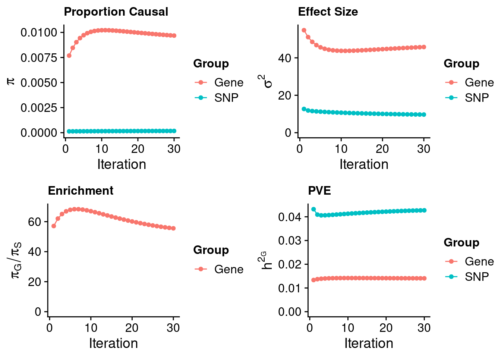
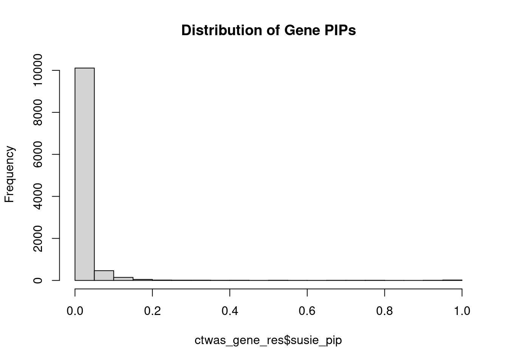
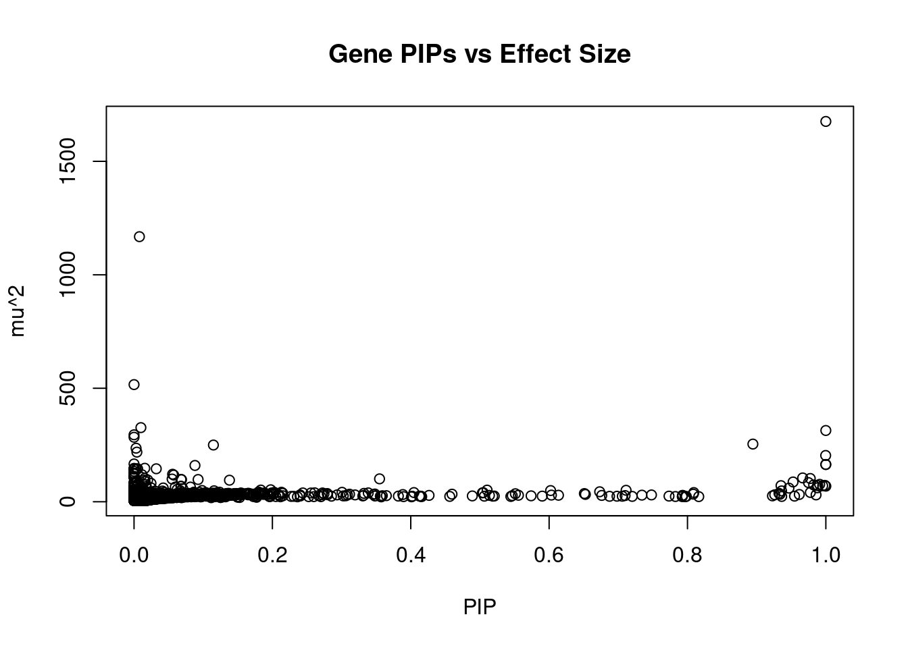
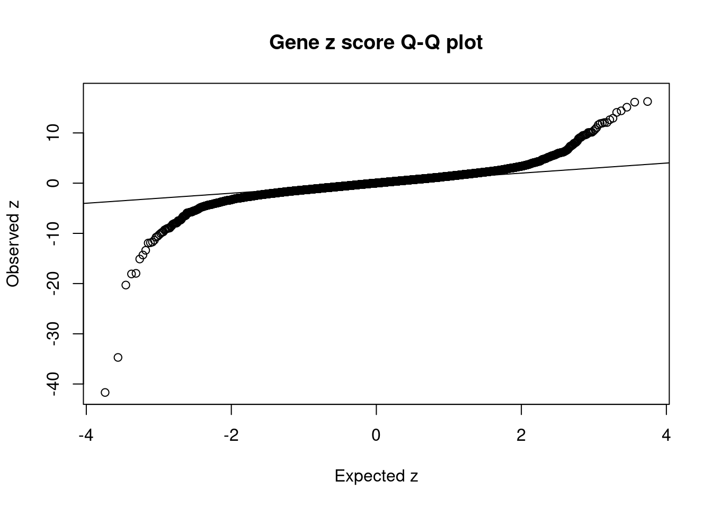
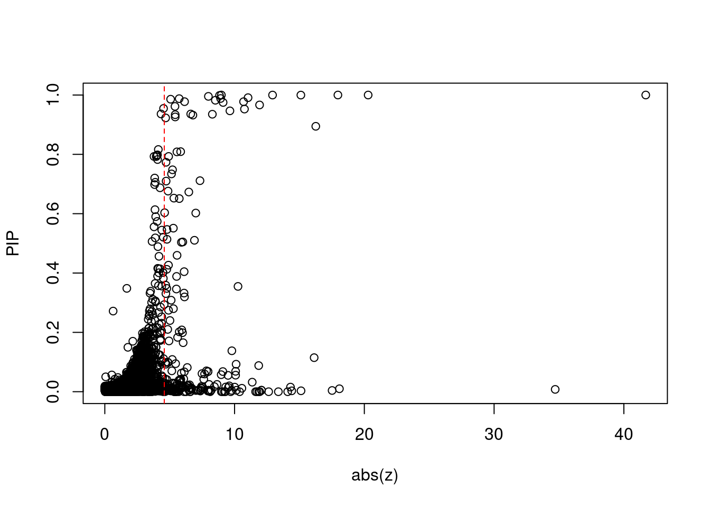
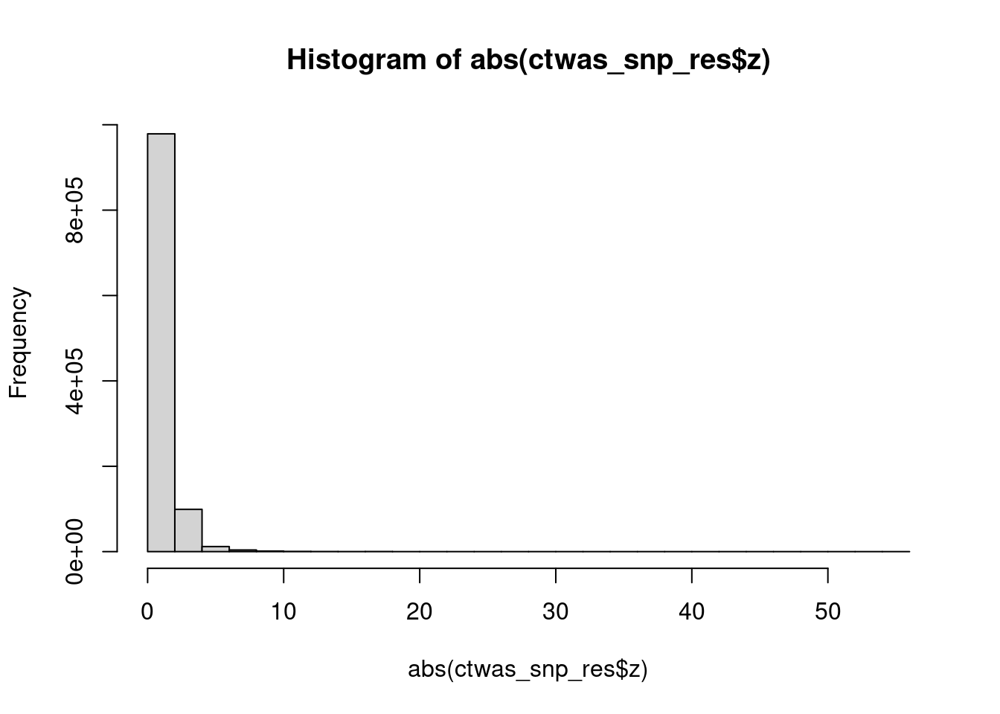
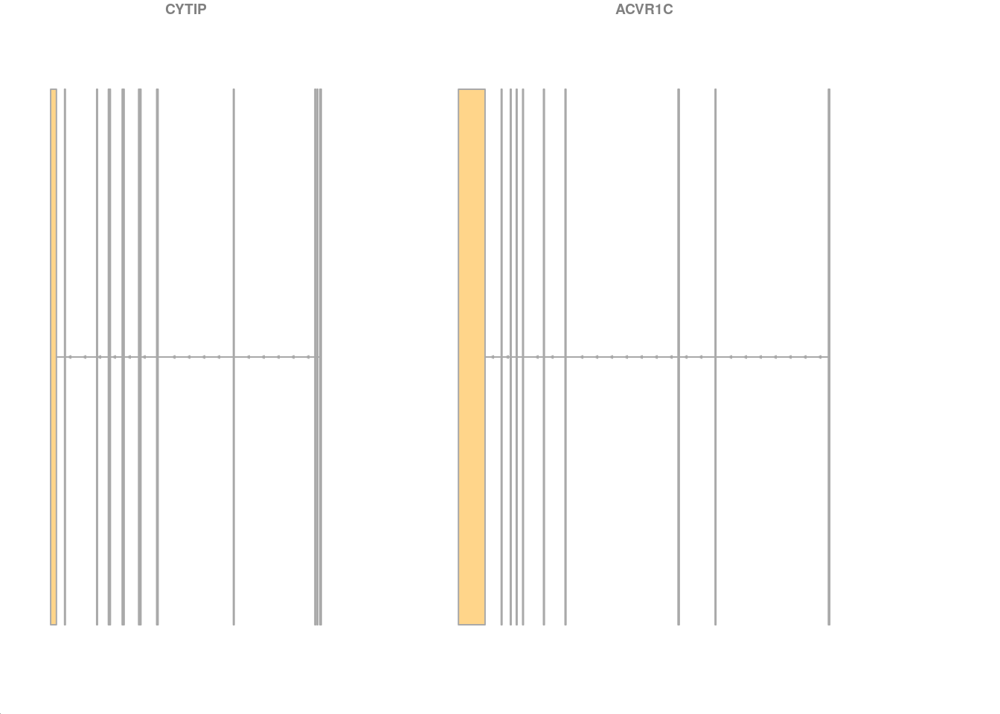

Last updated: 2022-10-19
Checks: 5 2
Knit directory: cTWAS_analysis/
This reproducible R Markdown analysis was created with workflowr (version 1.7.0). The Checks tab describes the reproducibility checks that were applied when the results were created. The Past versions tab lists the development history.
The R Markdown file has unstaged changes. To know which version of the R Markdown file created these results, you’ll want to first commit it to the Git repo. If you’re still working on the analysis, you can ignore this warning. When you’re finished, you can run wflow_publish to commit the R Markdown file and build the HTML.
Great job! The global environment was empty. Objects defined in the global environment can affect the analysis in your R Markdown file in unknown ways. For reproduciblity it’s best to always run the code in an empty environment.
The command set.seed(20211220) was run prior to running the code in the R Markdown file. Setting a seed ensures that any results that rely on randomness, e.g. subsampling or permutations, are reproducible.
Great job! Recording the operating system, R version, and package versions is critical for reproducibility.
Nice! There were no cached chunks for this analysis, so you can be confident that you successfully produced the results during this run.
Using absolute paths to the files within your workflowr project makes it difficult for you and others to run your code on a different machine. Change the absolute path(s) below to the suggested relative path(s) to make your code more reproducible.
| absolute | relative |
|---|---|
| /project2/xinhe/shengqian/cTWAS/cTWAS_analysis/data/ | data |
| /project2/xinhe/shengqian/cTWAS/cTWAS_analysis/code/ctwas_config_b38.R | code/ctwas_config_b38.R |
Great! You are using Git for version control. Tracking code development and connecting the code version to the results is critical for reproducibility.
The results in this page were generated with repository version 1585ea7. See the Past versions tab to see a history of the changes made to the R Markdown and HTML files.
Note that you need to be careful to ensure that all relevant files for the analysis have been committed to Git prior to generating the results (you can use wflow_publish or wflow_git_commit). workflowr only checks the R Markdown file, but you know if there are other scripts or data files that it depends on. Below is the status of the Git repository when the results were generated:
Ignored files:
Ignored: .Rhistory
Ignored: .ipynb_checkpoints/
Ignored: analysis/figure/
Untracked files:
Untracked: Proposal plots.R
Untracked: RGS14.pdf
Untracked: RNF186.pdf
Untracked: SCZ_annotation.xlsx
Untracked: SLC8B1.pdf
Untracked: UKB_analysis_allweights_scz/
Untracked: analysis/.ipynb_checkpoints/
Untracked: cache/
Untracked: code/.ipynb_checkpoints/
Untracked: code/IBD_ME_3kb_0.05_out/
Untracked: code/LDL_S_out/LDL_Liver.err
Untracked: code/LDL_S_out/LDL_Liver.out
Untracked: code/LDL_out/
Untracked: code/run_IBD_analysis_ME_3kb_0.05.sbatch
Untracked: code/run_IBD_analysis_ME_3kb_0.05.sh
Untracked: code/run_IBD_ctwas_rss_LDR_ME_3kb_0.05.R
Untracked: code/run_LDL_analysis.sbatch
Untracked: code/run_LDL_analysis.sh
Untracked: code/run_LDL_ctwas_rss_LDR.R
Untracked: data/.ipynb_checkpoints/
Untracked: data/FUMA_output/
Untracked: data/GO_Terms/
Untracked: data/IBD_ME/
Untracked: data/LDL/
Untracked: data/LDL_S/
Untracked: data/PGC3_SCZ_wave3_public.v2.tsv
Untracked: data/SCZ/
Untracked: data/SCZ_2014_EUR/
Untracked: data/SCZ_2014_EUR_ME/
Untracked: data/SCZ_2018/
Untracked: data/SCZ_2018_ME/
Untracked: data/SCZ_2018_S/
Untracked: data/SCZ_2020/
Untracked: data/SCZ_S/
Untracked: data/Supplementary Table 15 - MAGMA.xlsx
Untracked: data/Supplementary Table 20 - Prioritised Genes.xlsx
Untracked: data/UKBB/
Untracked: data/UKBB_SNPs_Info.text
Untracked: data/gene_OMIM.txt
Untracked: data/gene_pip_0.8.txt
Untracked: data/gwas_sumstats/
Untracked: data/magma.genes.out
Untracked: data/mashr_Heart_Atrial_Appendage.db
Untracked: data/mashr_sqtl/
Untracked: data/notes.txt
Untracked: data/scz_2018.RDS
Untracked: data/summary_known_genes_annotations.xlsx
Untracked: temp_LDR/
Untracked: top_genes_32.txt
Untracked: top_genes_37.txt
Untracked: top_genes_43.txt
Untracked: top_genes_54.txt
Untracked: top_genes_81.txt
Untracked: z_snp_pos_SCZ.RData
Untracked: z_snp_pos_SCZ_2014_EUR.RData
Untracked: z_snp_pos_SCZ_2018.RData
Untracked: z_snp_pos_SCZ_2020.RData
Unstaged changes:
Deleted: analysis/BMI_S_results.Rmd
Modified: analysis/LDL_Liver.Rmd
Deleted: code/LDL_S_out/T2D_Liver.err
Deleted: code/LDL_S_out/T2D_Liver.out
Modified: code/SCZ_out/SCZ_Brain_Amygdala.err
Modified: code/SCZ_out/SCZ_Brain_Amygdala.out
Modified: code/SCZ_out/SCZ_Brain_Anterior_cingulate_cortex_BA24.err
Modified: code/SCZ_out/SCZ_Brain_Anterior_cingulate_cortex_BA24.out
Modified: code/SCZ_out/SCZ_Brain_Caudate_basal_ganglia.err
Modified: code/SCZ_out/SCZ_Brain_Caudate_basal_ganglia.out
Modified: code/SCZ_out/SCZ_Brain_Cerebellar_Hemisphere.err
Modified: code/SCZ_out/SCZ_Brain_Cerebellar_Hemisphere.out
Modified: code/SCZ_out/SCZ_Brain_Cerebellum.err
Modified: code/SCZ_out/SCZ_Brain_Cerebellum.out
Modified: code/SCZ_out/SCZ_Brain_Cortex.err
Modified: code/SCZ_out/SCZ_Brain_Cortex.out
Modified: code/SCZ_out/SCZ_Brain_Frontal_Cortex_BA9.err
Modified: code/SCZ_out/SCZ_Brain_Frontal_Cortex_BA9.out
Modified: code/SCZ_out/SCZ_Brain_Hippocampus.err
Modified: code/SCZ_out/SCZ_Brain_Hippocampus.out
Modified: code/SCZ_out/SCZ_Brain_Hypothalamus.err
Modified: code/SCZ_out/SCZ_Brain_Hypothalamus.out
Modified: code/SCZ_out/SCZ_Brain_Nucleus_accumbens_basal_ganglia.err
Modified: code/SCZ_out/SCZ_Brain_Nucleus_accumbens_basal_ganglia.out
Modified: code/SCZ_out/SCZ_Brain_Putamen_basal_ganglia.err
Modified: code/SCZ_out/SCZ_Brain_Putamen_basal_ganglia.out
Modified: code/SCZ_out/SCZ_Brain_Spinal_cord_cervical_c-1.err
Modified: code/SCZ_out/SCZ_Brain_Spinal_cord_cervical_c-1.out
Modified: code/SCZ_out/SCZ_Brain_Substantia_nigra.err
Modified: code/SCZ_out/SCZ_Brain_Substantia_nigra.out
Deleted: code/run_IBD_ctwas_rss_LDR_ME.R
Modified: code/run_LDL_analysis_S.sbatch
Modified: code/run_LDL_analysis_S.sh
Modified: code/run_LDL_ctwas_rss_LDR_S.R
Modified: code/run_SCZ_analysis.sbatch
Modified: code/run_SCZ_analysis.sh
Modified: code/run_SCZ_ctwas_rss_LDR.R
Note that any generated files, e.g. HTML, png, CSS, etc., are not included in this status report because it is ok for generated content to have uncommitted changes.
These are the previous versions of the repository in which changes were made to the R Markdown (analysis/LDL_Liver.Rmd) and HTML (docs/LDL_Liver.html) files. If you’ve configured a remote Git repository (see ?wflow_git_remote), click on the hyperlinks in the table below to view the files as they were in that past version.
| File | Version | Author | Date | Message |
|---|---|---|---|---|
| Rmd | 1585ea7 | sq-96 | 2022-10-18 | update |
| html | 1585ea7 | sq-96 | 2022-10-18 | update |
| Rmd | 6a4ec7a | sq-96 | 2022-10-18 | updtae |
| html | 6a4ec7a | sq-96 | 2022-10-18 | updtae |
[1] 11502[1] 10901
1 2 3 4 5 6 7 8 9 10 11 12 13 14 15 16
1070 768 652 417 494 611 548 408 405 434 634 629 195 365 354 526
17 18 19 20 21 22
663 160 859 306 114 289 [1] 0.8365
| Version | Author | Date |
|---|---|---|
| 6a4ec7a | sq-96 | 2022-10-18 |
gene snp
0.0096829 0.0001743 gene snp
45.772 9.687 [1] 55.56[1] 343621[1] 10901 8696600 gene snp
0.01406 0.04273 [1] 0.05679 gene
0.2476 #distribution of PIPs
hist(ctwas_gene_res$susie_pip, xlim=c(0,1), main="Distribution of Gene PIPs")
| Version | Author | Date |
|---|---|---|
| 6a4ec7a | sq-96 | 2022-10-18 |
#genes with PIP>0.8 or 20 highest PIPs
head(ctwas_gene_res[order(-ctwas_gene_res$susie_pip),report_cols], max(sum(ctwas_gene_res$susie_pip>0.8), 20)) genename region_tag susie_pip mu2 PVE z num_eqtl
4433 PSRC1 1_67 1.0000 1675.70 4.877e-03 -41.687 1
11327 HPR 16_38 1.0000 164.01 4.773e-04 -17.963 2
3720 INSIG2 2_69 1.0000 68.69 1.999e-04 -8.983 3
5561 ABCG8 2_27 1.0000 313.97 9.137e-04 -20.294 1
5988 FADS1 11_34 0.9999 164.33 4.782e-04 12.926 2
NA.980 <NA> 1_121 0.9997 203.89 5.932e-04 -15.108 1
10612 TRIM39 6_24 0.9986 72.24 2.099e-04 8.840 3
7405 ABCA1 9_53 0.9954 70.43 2.040e-04 7.982 1
8523 TNKS 8_12 0.9911 76.67 2.211e-04 11.039 2
9365 GAS6 13_62 0.9883 71.42 2.054e-04 -8.924 1
1597 PLTP 20_28 0.9877 61.48 1.767e-04 -5.732 1
1999 PRKD2 19_33 0.9859 30.13 8.645e-05 5.072 2
7036 INHBB 2_70 0.9824 74.11 2.119e-04 -8.519 1
5542 CNIH4 1_114 0.9776 40.86 1.163e-04 6.146 2
2092 SP4 7_19 0.9775 102.48 2.915e-04 10.693 1
6090 CSNK1G3 5_75 0.9749 84.33 2.392e-04 9.116 1
8853 FUT2 19_33 0.9665 105.00 2.953e-04 -11.927 1
11257 CYP2A6 19_28 0.9616 32.05 8.969e-05 5.407 1
3247 KDSR 18_35 0.9547 24.71 6.865e-05 -4.526 1
233 NPC1L1 7_32 0.9526 87.19 2.417e-04 -10.762 1
4702 DDX56 7_32 0.9466 60.02 1.654e-04 9.642 2
6387 TTC39B 9_13 0.9362 23.31 6.349e-05 -4.334 3
6774 PKN3 9_66 0.9360 47.70 1.299e-04 -6.621 1
6217 PELO 5_31 0.9352 70.89 1.929e-04 8.288 2
1114 SRRT 7_62 0.9336 32.81 8.915e-05 5.425 2
3300 C10orf88 10_77 0.9322 37.26 1.011e-04 -6.788 2
8571 STAT5B 17_25 0.9261 30.73 8.281e-05 5.426 2
3562 ACVR1C 2_94 0.9228 25.91 6.960e-05 -4.687 2
6953 USP1 1_39 0.8945 254.14 6.616e-04 16.258 1
9046 KLHDC7A 1_13 0.8163 22.65 5.380e-05 4.124 1
8411 POP7 7_62 0.8091 40.51 9.539e-05 -5.845 1
9054 SPTY2D1 11_13 0.8084 33.57 7.898e-05 -5.557 1#plot PIP vs effect size
plot(ctwas_gene_res$susie_pip, ctwas_gene_res$mu2, xlab="PIP", ylab="mu^2", main="Gene PIPs vs Effect Size")
#genes with 20 largest effect sizes
head(ctwas_gene_res[order(-ctwas_gene_res$mu2),report_cols],20) genename region_tag susie_pip mu2 PVE z num_eqtl
4433 PSRC1 1_67 1.000e+00 1675.7 4.877e-03 -41.6873 1
5434 PSMA5 1_67 7.781e-03 1168.0 2.645e-05 -34.7083 2
4560 SRPK2 7_65 0.000e+00 516.2 0.000e+00 -1.4622 1
6966 ATXN7L2 1_67 9.905e-03 326.6 9.415e-06 -18.0803 2
5561 ABCG8 2_27 1.000e+00 314.0 9.137e-04 -20.2940 1
NA.384 <NA> 7_65 0.000e+00 295.0 0.000e+00 0.9675 2
5375 GEMIN7 19_32 0.000e+00 284.3 0.000e+00 14.0932 2
6953 USP1 1_39 8.945e-01 254.1 6.616e-04 16.2582 1
4315 ANGPTL3 1_39 1.147e-01 249.9 8.345e-05 16.1322 1
NA.439 <NA> 8_83 2.956e-03 236.0 2.030e-06 14.4041 1
3441 POLK 5_45 4.115e-03 218.7 2.619e-06 17.5158 1
NA.980 <NA> 1_121 9.997e-01 203.9 5.932e-04 -15.1084 1
781 PVR 19_32 0.000e+00 166.5 0.000e+00 -6.1127 2
5988 FADS1 11_34 9.999e-01 164.3 4.782e-04 12.9264 2
11327 HPR 16_38 1.000e+00 164.0 4.773e-04 -17.9628 2
5238 NLRC5 16_31 8.806e-02 159.9 4.098e-05 11.8602 1
NA.266 <NA> 5_45 1.550e-02 147.6 6.658e-06 -14.3080 2
538 ZNF112 19_32 0.000e+00 147.2 0.000e+00 10.3861 1
NA.91 <NA> 2_13 3.166e-09 145.5 1.341e-12 -2.3287 1
2465 APOA5 11_70 3.215e-02 145.3 1.360e-05 -11.3599 1#genes with 20 highest pve
head(ctwas_gene_res[order(-ctwas_gene_res$PVE),report_cols],20) genename region_tag susie_pip mu2 PVE z num_eqtl
4433 PSRC1 1_67 1.0000 1675.70 0.0048766 -41.687 1
5561 ABCG8 2_27 1.0000 313.97 0.0009137 -20.294 1
6953 USP1 1_39 0.8945 254.14 0.0006616 16.258 1
NA.980 <NA> 1_121 0.9997 203.89 0.0005932 -15.108 1
5988 FADS1 11_34 0.9999 164.33 0.0004782 12.926 2
11327 HPR 16_38 1.0000 164.01 0.0004773 -17.963 2
8853 FUT2 19_33 0.9665 105.00 0.0002953 -11.927 1
2092 SP4 7_19 0.9775 102.48 0.0002915 10.693 1
233 NPC1L1 7_32 0.9526 87.19 0.0002417 -10.762 1
6090 CSNK1G3 5_75 0.9749 84.33 0.0002392 9.116 1
8523 TNKS 8_12 0.9911 76.67 0.0002211 11.039 2
7036 INHBB 2_70 0.9824 74.11 0.0002119 -8.519 1
10612 TRIM39 6_24 0.9986 72.24 0.0002099 8.840 3
9365 GAS6 13_62 0.9883 71.42 0.0002054 -8.924 1
7405 ABCA1 9_53 0.9954 70.43 0.0002040 7.982 1
3720 INSIG2 2_69 1.0000 68.69 0.0001999 -8.983 3
6217 PELO 5_31 0.9352 70.89 0.0001929 8.288 2
1597 PLTP 20_28 0.9877 61.48 0.0001767 -5.732 1
4702 DDX56 7_32 0.9466 60.02 0.0001654 9.642 2
6774 PKN3 9_66 0.9360 47.70 0.0001299 -6.621 1#genes with 20 largest z scores
head(ctwas_gene_res[order(-abs(ctwas_gene_res$z)),report_cols],20) genename region_tag susie_pip mu2 PVE z num_eqtl
4433 PSRC1 1_67 1.000e+00 1675.7 4.877e-03 -41.69 1
5434 PSMA5 1_67 7.781e-03 1168.0 2.645e-05 -34.71 2
5561 ABCG8 2_27 1.000e+00 314.0 9.137e-04 -20.29 1
6966 ATXN7L2 1_67 9.905e-03 326.6 9.415e-06 -18.08 2
11327 HPR 16_38 1.000e+00 164.0 4.773e-04 -17.96 2
3441 POLK 5_45 4.115e-03 218.7 2.619e-06 17.52 1
6953 USP1 1_39 8.945e-01 254.1 6.616e-04 16.26 1
4315 ANGPTL3 1_39 1.147e-01 249.9 8.345e-05 16.13 1
9948 ANKDD1B 5_45 3.087e-03 144.0 1.294e-06 15.12 2
NA.980 <NA> 1_121 9.997e-01 203.9 5.932e-04 -15.11 1
NA.439 <NA> 8_83 2.956e-03 236.0 2.030e-06 14.40 1
NA.266 <NA> 5_45 1.550e-02 147.6 6.658e-06 -14.31 2
5375 GEMIN7 19_32 0.000e+00 284.3 0.000e+00 14.09 2
1930 PPP1R37 19_32 0.000e+00 143.5 0.000e+00 -13.38 2
5988 FADS1 11_34 9.999e-01 164.3 4.782e-04 12.93 2
11479 ZNF229 19_32 0.000e+00 122.0 0.000e+00 12.63 2
4505 FADS2 11_34 5.045e-03 145.0 2.129e-06 12.07 1
7950 FEN1 11_34 5.045e-03 145.0 2.129e-06 12.07 1
4111 YIPF2 19_9 2.147e-09 126.6 7.909e-13 11.94 1
8853 FUT2 19_33 9.665e-01 105.0 2.953e-04 -11.93 1#set nominal signifiance threshold for z scores
alpha <- 0.05
#bonferroni adjusted threshold for z scores
sig_thresh <- qnorm(1-(alpha/nrow(ctwas_gene_res)/2), lower=T)
#Q-Q plot for z scores
obs_z <- ctwas_gene_res$z[order(ctwas_gene_res$z)]
exp_z <- qnorm((1:nrow(ctwas_gene_res))/nrow(ctwas_gene_res))
plot(exp_z, obs_z, xlab="Expected z", ylab="Observed z", main="Gene z score Q-Q plot")
abline(a=0,b=1)
#plot z score vs PIP
plot(abs(ctwas_gene_res$z), ctwas_gene_res$susie_pip, xlab="abs(z)", ylab="PIP")
abline(v=sig_thresh, col="red", lty=2)
#number of significant z scores
sum(abs(ctwas_gene_res$z) > sig_thresh)[1] 221#proportion of significant z scores
mean(abs(ctwas_gene_res$z) > sig_thresh)[1] 0.02027#genes with most significant z scores
head(ctwas_gene_res[order(-abs(ctwas_gene_res$z)),report_cols],20) genename region_tag susie_pip mu2 PVE z num_eqtl
4433 PSRC1 1_67 1.000e+00 1675.7 4.877e-03 -41.69 1
5434 PSMA5 1_67 7.781e-03 1168.0 2.645e-05 -34.71 2
5561 ABCG8 2_27 1.000e+00 314.0 9.137e-04 -20.29 1
6966 ATXN7L2 1_67 9.905e-03 326.6 9.415e-06 -18.08 2
11327 HPR 16_38 1.000e+00 164.0 4.773e-04 -17.96 2
3441 POLK 5_45 4.115e-03 218.7 2.619e-06 17.52 1
6953 USP1 1_39 8.945e-01 254.1 6.616e-04 16.26 1
4315 ANGPTL3 1_39 1.147e-01 249.9 8.345e-05 16.13 1
9948 ANKDD1B 5_45 3.087e-03 144.0 1.294e-06 15.12 2
NA.980 <NA> 1_121 9.997e-01 203.9 5.932e-04 -15.11 1
NA.439 <NA> 8_83 2.956e-03 236.0 2.030e-06 14.40 1
NA.266 <NA> 5_45 1.550e-02 147.6 6.658e-06 -14.31 2
5375 GEMIN7 19_32 0.000e+00 284.3 0.000e+00 14.09 2
1930 PPP1R37 19_32 0.000e+00 143.5 0.000e+00 -13.38 2
5988 FADS1 11_34 9.999e-01 164.3 4.782e-04 12.93 2
11479 ZNF229 19_32 0.000e+00 122.0 0.000e+00 12.63 2
4505 FADS2 11_34 5.045e-03 145.0 2.129e-06 12.07 1
7950 FEN1 11_34 5.045e-03 145.0 2.129e-06 12.07 1
4111 YIPF2 19_9 2.147e-09 126.6 7.909e-13 11.94 1
8853 FUT2 19_33 9.665e-01 105.0 2.953e-04 -11.93 1#snps with PIP>0.8 or 20 highest PIPs
head(ctwas_snp_res[order(-ctwas_snp_res$susie_pip),report_cols_snps],
max(sum(ctwas_snp_res$susie_pip>0.8), 20)) id region_tag susie_pip mu2 PVE z
14015 rs2495502 1_34 1.0000 283.02 8.236e-04 -6.292
68962 rs1042034 2_13 1.0000 233.06 6.782e-04 -16.573
68968 rs934197 2_13 1.0000 415.44 1.209e-03 -33.061
70698 rs780093 2_16 1.0000 160.66 4.675e-04 14.143
366620 rs12208357 6_103 1.0000 234.53 6.825e-04 -12.282
403269 rs763798411 7_65 1.0000 3376.49 9.826e-03 -3.272
754423 rs113408695 17_39 1.0000 143.06 4.163e-04 -12.769
787839 rs73013176 19_9 1.0000 236.97 6.896e-04 16.233
797980 rs62117204 19_32 1.0000 825.46 2.402e-03 44.672
797998 rs111794050 19_32 1.0000 763.27 2.221e-03 33.600
798031 rs814573 19_32 1.0000 2203.46 6.412e-03 -55.538
798033 rs113345881 19_32 1.0000 771.84 2.246e-03 34.319
798036 rs12721109 19_32 1.0000 1340.74 3.902e-03 46.326
1016858 rs964184 11_70 1.0000 238.86 6.951e-04 16.661
754449 rs8070232 17_39 1.0000 143.85 4.186e-04 8.091
790649 rs2285626 19_15 1.0000 245.77 7.152e-04 18.215
808308 rs34507316 20_13 1.0000 78.09 2.273e-04 6.815
68913 rs11679386 2_12 1.0000 127.31 3.705e-04 -11.909
68971 rs548145 2_13 1.0000 656.18 1.910e-03 -33.086
69048 rs1848922 2_13 1.0000 229.82 6.688e-04 -25.412
501265 rs115478735 9_70 1.0000 301.95 8.787e-04 -19.012
1091268 rs1800961 20_28 1.0000 70.79 2.060e-04 8.897
753507 rs1801689 17_38 1.0000 79.66 2.318e-04 -9.396
797694 rs73036721 19_30 1.0000 57.31 1.668e-04 7.788
76376 rs72800939 2_28 1.0000 55.13 1.604e-04 7.846
441071 rs4738679 8_45 1.0000 106.57 3.101e-04 11.700
787877 rs137992968 19_9 1.0000 112.52 3.274e-04 10.753
583894 rs4937122 11_77 1.0000 77.05 2.242e-04 -12.148
14026 rs10888896 1_34 1.0000 131.38 3.823e-04 -11.894
366804 rs56393506 6_104 1.0000 88.32 2.570e-04 -14.088
7471 rs79598313 1_18 1.0000 46.24 1.346e-04 -7.025
460732 rs13252684 8_83 1.0000 216.52 6.301e-04 -11.964
439676 rs140753685 8_42 1.0000 54.24 1.579e-04 -7.799
797739 rs62115478 19_30 1.0000 179.61 5.227e-04 14.326
53890 rs2807848 1_112 1.0000 54.78 1.594e-04 7.883
790674 rs3794991 19_15 1.0000 212.27 6.177e-04 21.492
1045561 rs9302635 16_38 1.0000 161.48 4.699e-04 13.839
13985 rs11580527 1_34 1.0000 87.72 2.553e-04 11.167
14033 rs471705 1_34 1.0000 207.56 6.040e-04 -16.263
348057 rs9496567 6_67 0.9999 38.26 1.113e-04 6.340
787903 rs4804149 19_10 0.9999 45.32 1.319e-04 -6.519
787863 rs3745677 19_9 0.9998 88.60 2.578e-04 -9.336
808307 rs6075251 20_13 0.9998 51.21 1.490e-04 2.330
366768 rs117733303 6_104 0.9994 97.08 2.824e-04 -10.098
539619 rs17875416 10_71 0.9992 37.09 1.079e-04 6.266
787868 rs1569372 19_9 0.9991 268.42 7.804e-04 -10.006
787956 rs322144 19_10 0.9989 54.37 1.581e-04 -3.947
604320 rs7397189 12_36 0.9989 33.41 9.712e-05 5.771
790633 rs12981966 19_15 0.9987 90.13 2.619e-04 -1.823
787860 rs147985405 19_9 0.9985 2243.67 6.519e-03 48.935
429403 rs1495743 8_20 0.9975 40.03 1.162e-04 6.516
790314 rs2302209 19_14 0.9968 42.11 1.221e-04 -6.636
322928 rs454182 6_22 0.9961 31.79 9.215e-05 -4.779
280249 rs7701166 5_45 0.9959 32.13 9.312e-05 2.485
441039 rs56386732 8_45 0.9953 34.16 9.894e-05 7.012
402199 rs3197597 7_61 0.9950 31.89 9.235e-05 5.045
813261 rs76981217 20_24 0.9949 35.06 1.015e-04 -7.692
608686 rs148481241 12_44 0.9920 26.93 7.774e-05 -5.095
620904 rs653178 12_67 0.9919 91.34 2.637e-04 -11.050
323365 rs3130253 6_23 0.9892 28.48 8.199e-05 -5.641
137520 rs709149 3_9 0.9840 35.01 1.002e-04 6.782
403280 rs4997569 7_65 0.9828 3400.63 9.726e-03 2.984
280190 rs10062361 5_45 0.9826 199.04 5.692e-04 -20.321
729810 rs4396539 16_37 0.9817 26.83 7.666e-05 5.233
144530 rs9834932 3_24 0.9787 64.77 1.845e-04 8.482
813265 rs73124945 20_24 0.9783 32.06 9.128e-05 7.775
813212 rs6029132 20_24 0.9779 38.62 1.099e-04 6.762
624993 rs11057830 12_76 0.9778 25.37 7.218e-05 -4.930
318842 rs11376017 6_13 0.9645 64.36 1.806e-04 8.508
244802 rs114756490 4_100 0.9644 25.75 7.227e-05 -4.989
460721 rs79658059 8_83 0.9605 258.65 7.230e-04 16.022
386431 rs141379002 7_33 0.9598 25.04 6.994e-05 -4.897
564971 rs6591179 11_36 0.9591 25.79 7.199e-05 -4.893
821266 rs62219001 21_2 0.9590 25.62 7.150e-05 4.948
222073 rs1458038 4_54 0.9578 51.18 1.427e-04 7.418
475979 rs1556516 9_16 0.9539 71.51 1.985e-04 8.992
757582 rs4969183 17_44 0.9529 47.78 1.325e-04 -7.169
589803 rs11048034 12_9 0.9493 34.76 9.603e-05 -6.134
468784 rs7024888 9_3 0.9467 25.73 7.088e-05 5.056
322389 rs75080831 6_19 0.9414 55.48 1.520e-04 7.907
623858 rs1169300 12_74 0.9402 66.55 1.821e-04 -8.685
323336 rs28986304 6_23 0.9399 41.97 1.148e-04 -7.383
618997 rs1196760 12_63 0.9388 25.36 6.929e-05 4.867
425080 rs117037226 8_11 0.9314 23.86 6.468e-05 -4.192
68965 rs78610189 2_13 0.9212 58.27 1.562e-04 8.385
350793 rs12199109 6_73 0.9186 24.37 6.515e-05 -4.857
193698 rs5855544 3_120 0.9182 23.51 6.282e-05 4.594
1053778 rs2908806 17_7 0.9165 36.38 9.704e-05 6.026
14016 rs1887552 1_34 0.9065 326.18 8.605e-04 9.869
366614 rs9456502 6_103 0.9047 32.52 8.562e-05 -5.964
195485 rs36205397 4_4 0.8920 37.32 9.687e-05 -6.159
506215 rs10905277 10_8 0.8889 27.52 7.119e-05 -5.126
725918 rs821840 16_31 0.8876 154.63 3.994e-04 13.475
539330 rs12244851 10_70 0.8847 35.54 9.150e-05 4.883
787944 rs322125 19_10 0.8838 98.37 2.530e-04 7.470
803953 rs74273659 20_5 0.8834 24.38 6.267e-05 -4.647
801763 rs34003091 19_39 0.8790 101.68 2.601e-04 10.424
577611 rs201912654 11_59 0.8671 39.30 9.918e-05 6.306
197710 rs2002574 4_10 0.8656 24.48 6.167e-05 4.558
790723 rs12984303 19_15 0.8638 24.54 6.170e-05 -4.517
816764 rs10641149 20_32 0.8632 26.79 6.730e-05 -5.076
68765 rs6531234 2_12 0.8553 41.73 1.039e-04 7.171
828507 rs2835302 21_17 0.8505 25.61 6.339e-05 4.654
787913 rs58495388 19_10 0.8505 33.26 8.232e-05 -5.531
119617 rs7569317 2_120 0.8479 43.10 1.063e-04 -7.901
840595 rs145678077 22_17 0.8477 24.83 6.126e-05 4.869
813230 rs6102034 20_24 0.8436 95.21 2.337e-04 11.190
483965 rs11144506 9_35 0.8431 26.72 6.556e-05 -5.043
356996 rs9321207 6_86 0.8402 30.11 7.363e-05 -5.402
583897 rs74612335 11_77 0.8386 75.15 1.834e-04 -11.905
280213 rs3843482 5_45 0.8331 389.97 9.455e-04 -25.034
812006 rs11167269 20_21 0.8257 55.43 1.332e-04 7.795
923260 rs535137438 5_31 0.8197 31.37 7.485e-05 5.068
533509 rs10882161 10_59 0.8102 29.44 6.940e-05 5.476
754434 rs9303012 17_39 0.8091 134.95 3.178e-04 -2.259
808288 rs78348000 20_13 0.8004 29.85 6.953e-05 -5.221#plot PIP vs effect size
#plot(ctwas_snp_res$susie_pip, ctwas_snp_res$mu2, xlab="PIP", ylab="mu^2", main="SNP PIPs vs Effect Size")
#SNPs with 50 largest effect sizes
head(ctwas_snp_res[order(-ctwas_snp_res$mu2),report_cols_snps],50) id region_tag susie_pip mu2 PVE z
403280 rs4997569 7_65 9.828e-01 3401 9.726e-03 2.9841
403272 rs10274607 7_65 6.595e-02 3391 6.509e-04 2.8670
403275 rs13230660 7_65 1.772e-01 3389 1.747e-03 2.9480
403287 rs6952534 7_65 7.855e-03 3387 7.741e-05 2.8884
403286 rs4730069 7_65 2.018e-03 3383 1.986e-05 2.8659
403269 rs763798411 7_65 1.000e+00 3376 9.826e-03 -3.2721
403279 rs10242713 7_65 6.292e-05 3371 6.172e-07 2.8124
403282 rs10249965 7_65 9.296e-07 3344 9.045e-09 2.8497
403294 rs1013016 7_65 0.000e+00 3198 0.000e+00 -2.3989
403319 rs8180737 7_65 0.000e+00 3048 0.000e+00 2.8328
403312 rs17778396 7_65 0.000e+00 3046 0.000e+00 2.7980
403313 rs2237621 7_65 0.000e+00 3045 0.000e+00 2.8030
403346 rs10224564 7_65 0.000e+00 3039 0.000e+00 2.7912
403284 rs71562637 7_65 0.000e+00 3038 0.000e+00 2.6636
403331 rs10255779 7_65 0.000e+00 3038 0.000e+00 2.8136
403348 rs78132606 7_65 0.000e+00 3023 0.000e+00 2.7728
403351 rs4610671 7_65 0.000e+00 3018 0.000e+00 2.7250
403353 rs12669532 7_65 0.000e+00 2895 0.000e+00 2.7703
403310 rs2237618 7_65 0.000e+00 2841 0.000e+00 2.4663
403355 rs118089279 7_65 0.000e+00 2818 0.000e+00 2.6667
403342 rs73188303 7_65 0.000e+00 2810 0.000e+00 2.4217
787860 rs147985405 19_9 9.985e-01 2244 6.519e-03 48.9352
787855 rs73015020 19_9 8.969e-04 2232 5.825e-06 48.7956
787853 rs138175288 19_9 4.230e-04 2230 2.745e-06 48.7807
787856 rs77140532 19_9 6.348e-05 2227 4.114e-07 48.7380
787854 rs138294113 19_9 1.045e-04 2226 6.768e-07 48.7519
403352 rs560364150 7_65 0.000e+00 2225 0.000e+00 1.8695
787858 rs10412048 19_9 1.313e-05 2223 8.495e-08 48.7012
787857 rs112552009 19_9 3.168e-05 2222 2.049e-07 48.7052
798031 rs814573 19_32 1.000e+00 2203 6.412e-03 -55.5379
787852 rs55997232 19_9 1.739e-08 2203 1.115e-10 48.5243
403338 rs10261738 7_65 0.000e+00 1837 0.000e+00 2.6665
787861 rs17248769 19_9 1.647e-06 1690 8.099e-09 40.8425
787862 rs2228671 19_9 1.131e-06 1679 5.527e-09 40.7026
798026 rs34878901 19_32 0.000e+00 1525 0.000e+00 -16.3493
875592 rs12740374 1_67 5.156e-04 1447 2.171e-06 41.7935
875588 rs7528419 1_67 5.176e-04 1443 2.173e-06 41.7369
875599 rs646776 1_67 4.472e-04 1442 1.876e-06 -41.7334
875598 rs629301 1_67 4.171e-04 1438 1.745e-06 -41.6873
798023 rs8106922 19_32 0.000e+00 1437 0.000e+00 -15.6771
875610 rs583104 1_67 4.510e-04 1398 1.835e-06 -41.0871
875613 rs4970836 1_67 4.437e-04 1395 1.801e-06 -41.0455
875615 rs1277930 1_67 4.523e-04 1390 1.830e-06 -40.9760
875616 rs599839 1_67 4.649e-04 1389 1.879e-06 -40.9590
403293 rs368909701 7_65 0.000e+00 1388 0.000e+00 0.7779
875596 rs3832016 1_67 3.301e-04 1351 1.298e-06 -40.3960
875593 rs660240 1_67 3.293e-04 1344 1.288e-06 -40.2896
798036 rs12721109 19_32 1.000e+00 1341 3.902e-03 46.3258
875611 rs602633 1_67 3.653e-04 1323 1.406e-06 -39.9564
797951 rs62120566 19_32 0.000e+00 1321 0.000e+00 33.7354#SNPs with 50 highest pve
head(ctwas_snp_res[order(-ctwas_snp_res$PVE),report_cols_snps],50) id region_tag susie_pip mu2 PVE z
403269 rs763798411 7_65 1.00000 3376.49 0.0098262 -3.272
403280 rs4997569 7_65 0.98278 3400.63 0.0097260 2.984
787860 rs147985405 19_9 0.99847 2243.67 0.0065195 48.935
798031 rs814573 19_32 1.00000 2203.46 0.0064125 -55.538
798036 rs12721109 19_32 1.00000 1340.74 0.0039018 46.326
797980 rs62117204 19_32 1.00000 825.46 0.0024022 44.672
798033 rs113345881 19_32 1.00000 771.84 0.0022462 34.319
797998 rs111794050 19_32 1.00000 763.27 0.0022213 33.600
68971 rs548145 2_13 1.00000 656.18 0.0019096 -33.086
403275 rs13230660 7_65 0.17718 3388.53 0.0017472 2.948
68968 rs934197 2_13 1.00000 415.44 0.0012090 -33.061
280213 rs3843482 5_45 0.83314 389.97 0.0009455 -25.034
501265 rs115478735 9_70 1.00000 301.95 0.0008787 -19.012
14016 rs1887552 1_34 0.90648 326.18 0.0008605 9.869
14015 rs2495502 1_34 1.00000 283.02 0.0008236 -6.292
787868 rs1569372 19_9 0.99909 268.42 0.0007804 -10.006
460721 rs79658059 8_83 0.96053 258.65 0.0007230 16.022
790649 rs2285626 19_15 1.00000 245.77 0.0007152 18.215
1016858 rs964184 11_70 1.00000 238.86 0.0006951 16.661
787839 rs73013176 19_9 1.00000 236.97 0.0006896 16.233
366620 rs12208357 6_103 1.00000 234.53 0.0006825 -12.282
68962 rs1042034 2_13 1.00000 233.06 0.0006782 -16.573
69048 rs1848922 2_13 1.00000 229.82 0.0006688 -25.412
403272 rs10274607 7_65 0.06595 3391.15 0.0006509 2.867
460732 rs13252684 8_83 1.00000 216.52 0.0006301 -11.964
790674 rs3794991 19_15 0.99999 212.27 0.0006177 21.492
14033 rs471705 1_34 0.99996 207.56 0.0006040 -16.263
280190 rs10062361 5_45 0.98262 199.04 0.0005692 -20.321
797739 rs62115478 19_30 1.00000 179.61 0.0005227 14.326
899130 rs6544713 2_27 0.76478 223.14 0.0004966 20.378
1045561 rs9302635 16_38 0.99999 161.48 0.0004699 13.839
70698 rs780093 2_16 1.00000 160.66 0.0004675 14.143
754449 rs8070232 17_39 1.00000 143.85 0.0004186 8.091
366634 rs3818678 6_103 0.75517 190.18 0.0004179 9.948
754423 rs113408695 17_39 1.00000 143.06 0.0004163 -12.769
725918 rs821840 16_31 0.88761 154.63 0.0003994 13.475
14026 rs10888896 1_34 1.00000 131.38 0.0003823 -11.894
68913 rs11679386 2_12 1.00000 127.31 0.0003705 -11.909
305092 rs12657266 5_92 0.74882 152.95 0.0003333 -13.895
787877 rs137992968 19_9 1.00000 112.52 0.0003274 10.753
754434 rs9303012 17_39 0.80909 134.95 0.0003178 -2.259
441071 rs4738679 8_45 1.00000 106.57 0.0003101 11.700
460720 rs2980875 8_83 0.57379 184.71 0.0003084 22.102
1045373 rs77303550 16_38 0.66891 157.86 0.0003073 13.733
366768 rs117733303 6_104 0.99945 97.08 0.0002824 -10.098
620904 rs653178 12_67 0.99191 91.34 0.0002637 -11.050
790633 rs12981966 19_15 0.99868 90.13 0.0002619 -1.823
801763 rs34003091 19_39 0.87902 101.68 0.0002601 10.424
787863 rs3745677 19_9 0.99982 88.60 0.0002578 -9.336
366804 rs56393506 6_104 1.00000 88.32 0.0002570 -14.088#histogram of (abs) SNP z scores
hist(abs(ctwas_snp_res$z))
#SNPs with 50 largest z scores
head(ctwas_snp_res[order(-abs(ctwas_snp_res$z)),report_cols_snps],50) id region_tag susie_pip mu2 PVE z
798031 rs814573 19_32 1.000e+00 2203.5 6.412e-03 -55.54
787860 rs147985405 19_9 9.985e-01 2243.7 6.519e-03 48.94
787855 rs73015020 19_9 8.969e-04 2231.8 5.825e-06 48.80
787853 rs138175288 19_9 4.230e-04 2230.0 2.745e-06 48.78
787854 rs138294113 19_9 1.045e-04 2226.0 6.768e-07 48.75
787856 rs77140532 19_9 6.348e-05 2226.6 4.114e-07 48.74
787857 rs112552009 19_9 3.168e-05 2222.3 2.049e-07 48.71
787858 rs10412048 19_9 1.313e-05 2223.3 8.495e-08 48.70
787852 rs55997232 19_9 1.739e-08 2202.8 1.115e-10 48.52
798036 rs12721109 19_32 1.000e+00 1340.7 3.902e-03 46.33
797980 rs62117204 19_32 1.000e+00 825.5 2.402e-03 44.67
797967 rs1551891 19_32 0.000e+00 505.1 0.000e+00 42.27
875592 rs12740374 1_67 5.156e-04 1446.7 2.171e-06 41.79
875588 rs7528419 1_67 5.176e-04 1442.7 2.173e-06 41.74
875599 rs646776 1_67 4.472e-04 1441.6 1.876e-06 -41.73
875598 rs629301 1_67 4.171e-04 1437.9 1.745e-06 -41.69
875610 rs583104 1_67 4.510e-04 1397.7 1.835e-06 -41.09
875613 rs4970836 1_67 4.437e-04 1394.9 1.801e-06 -41.05
875615 rs1277930 1_67 4.523e-04 1390.2 1.830e-06 -40.98
875616 rs599839 1_67 4.649e-04 1389.3 1.879e-06 -40.96
787861 rs17248769 19_9 1.647e-06 1690.1 8.099e-09 40.84
787862 rs2228671 19_9 1.131e-06 1679.1 5.527e-09 40.70
875596 rs3832016 1_67 3.301e-04 1351.0 1.298e-06 -40.40
875593 rs660240 1_67 3.293e-04 1343.9 1.288e-06 -40.29
875611 rs602633 1_67 3.653e-04 1322.8 1.406e-06 -39.96
787851 rs9305020 19_9 4.552e-14 1276.7 1.691e-16 34.84
798027 rs405509 19_32 0.000e+00 976.8 0.000e+00 34.64
875579 rs4970834 1_67 7.158e-04 999.6 2.082e-06 34.62
798033 rs113345881 19_32 1.000e+00 771.8 2.246e-03 34.32
797951 rs62120566 19_32 0.000e+00 1320.7 0.000e+00 33.74
797998 rs111794050 19_32 1.000e+00 763.3 2.221e-03 33.60
68971 rs548145 2_13 1.000e+00 656.2 1.910e-03 -33.09
798004 rs4802238 19_32 0.000e+00 977.7 0.000e+00 -33.08
68968 rs934197 2_13 1.000e+00 415.4 1.209e-03 -33.06
797945 rs188099946 19_32 0.000e+00 1266.0 0.000e+00 33.04
798015 rs2972559 19_32 0.000e+00 1298.5 0.000e+00 -32.29
797939 rs201314191 19_32 0.000e+00 1174.2 0.000e+00 32.07
875600 rs3902354 1_67 3.760e-04 853.1 9.336e-07 -32.00
875589 rs11102967 1_67 3.771e-04 849.5 9.322e-07 -31.94
875614 rs4970837 1_67 4.303e-04 846.0 1.060e-06 -31.86
798006 rs56394238 19_32 0.000e+00 968.7 0.000e+00 -31.55
797983 rs2965169 19_32 0.000e+00 367.5 0.000e+00 31.38
798007 rs3021439 19_32 0.000e+00 864.3 0.000e+00 -31.05
875584 rs611917 1_67 3.587e-04 800.6 8.356e-07 30.98
68998 rs12997242 2_13 5.825e-11 384.2 6.512e-14 -30.82
798014 rs12162222 19_32 0.000e+00 1112.7 0.000e+00 -30.50
68972 rs478588 2_13 1.482e-10 604.2 2.605e-13 -30.49
797944 rs62119327 19_32 0.000e+00 1034.5 0.000e+00 30.42
68973 rs56350433 2_13 5.992e-12 351.2 6.124e-15 -30.23
68978 rs56079819 2_13 6.004e-12 350.4 6.123e-15 -30.19locus_plot_final_pub <- function(region_tag, xlim=NULL, return_table=F, focus=NULL, label_panel="TWAS", label_genes=NULL, label_pos=NULL, plot_eqtl=NULL, rerun_ctwas=F, rerun_load_only=F, legend_side="right", legend_panel="cTWAS", twas_ymax=NULL){
region_tag1 <- unlist(strsplit(region_tag, "_"))[1]
region_tag2 <- unlist(strsplit(region_tag, "_"))[2]
a <- ctwas_res[ctwas_res$region_tag==region_tag,]
regionlist <- readRDS(paste0(results_dir, "/", analysis_id, "_ctwas.regionlist.RDS"))
region <- regionlist[[as.numeric(region_tag1)]][[region_tag2]]
R_snp_info <- do.call(rbind, lapply(region$regRDS, function(x){data.table::fread(paste0(tools::file_path_sans_ext(x), ".Rvar"))}))
if (isTRUE(rerun_ctwas)){
ld_exprfs <- paste0(results_dir, "/", analysis_id, "_expr_chr", 1:22, ".expr.gz")
temp_reg <- data.frame("chr" = paste0("chr",region_tag1), "start" = region$start, "stop" = region$stop)
write.table(temp_reg,
#file= paste0(results_dir, "/", analysis_id, "_ctwas.temp.reg.txt") ,
file= "temp_reg.txt",
row.names=F, col.names=T, sep="\t", quote = F)
load(paste0(results_dir, "/", analysis_id, "_expr_z_snp.Rd"))
z_gene_temp <- z_gene[z_gene$id %in% a$id[a$type=="gene"],]
z_snp_temp <- z_snp[z_snp$id %in% R_snp_info$id,]
if (!rerun_load_only){
ctwas::ctwas_rss(z_gene_temp, z_snp_temp, ld_exprfs, ld_pgenfs = NULL,
ld_R_dir = dirname(region$regRDS)[1],
ld_regions_custom = "temp_reg.txt", thin = 1,
outputdir = ".", outname = "temp", ncore = 1, ncore.rerun = 1, prob_single = 0,
group_prior = estimated_group_prior, group_prior_var = estimated_group_prior_var,
estimate_group_prior = F, estimate_group_prior_var = F)
}
a_bkup <- a
a <- as.data.frame(data.table::fread("temp.susieIrss.txt", header = T))
rownames(z_snp_temp) <- z_snp_temp$id
z_snp_temp <- z_snp_temp[a$id[a$type=="SNP"],]
z_gene_temp <- z_gene_temp[a$id[a$type=="gene"],]
a$genename <- NA
a$gene_type <- NA
a[a$type=="gene",c("genename", "gene_type")] <- a_bkup[match(a$id[a$type=="gene"], a_bkup$id),c("genename","gene_type")]
a$z <- NA
a$z[a$type=="SNP"] <- z_snp_temp$z
a$z[a$type=="gene"] <- z_gene_temp$z
}
a_pos_bkup <- a$pos
a$pos[a$type=="gene"] <- G_list$tss[match(sapply(a$id[a$type=="gene"], function(x){unlist(strsplit(x, "[.]"))[1]}) ,G_list$ensembl_gene_id)]
a$pos[is.na(a$pos)] <- a_pos_bkup[is.na(a$pos)]
a$pos <- a$pos/1000000
if (!is.null(xlim)){
if (is.na(xlim[1])){
xlim[1] <- min(a$pos)
}
if (is.na(xlim[2])){
xlim[2] <- max(a$pos)
}
a <- a[a$pos>=xlim[1] & a$pos<=xlim[2],,drop=F]
}
if (is.null(focus)){
focus <- a$genename[a$z==max(abs(a$z)[a$type=="gene"])]
}
if (is.null(label_genes)){
label_genes <- focus
}
if (is.null(label_pos)){
label_pos <- rep(3, length(label_genes))
}
if (is.null(plot_eqtl)){
plot_eqtl <- focus
}
focus <- a$id[which(a$genename==focus)]
a$focus <- 0
a$focus <- as.numeric(a$id==focus)
a$PVALUE <- (-log(2) - pnorm(abs(a$z), lower.tail=F, log.p=T))/log(10)
R_gene <- readRDS(region$R_g_file)
R_snp_gene <- readRDS(region$R_sg_file)
R_snp <- as.matrix(Matrix::bdiag(lapply(region$regRDS, readRDS)))
rownames(R_gene) <- region$gid
colnames(R_gene) <- region$gid
rownames(R_snp_gene) <- R_snp_info$id
colnames(R_snp_gene) <- region$gid
rownames(R_snp) <- R_snp_info$id
colnames(R_snp) <- R_snp_info$id
a$r2max <- NA
a$r2max[a$type=="gene"] <- R_gene[focus,a$id[a$type=="gene"]]
a$r2max[a$type=="SNP"] <- R_snp_gene[a$id[a$type=="SNP"],focus]
r2cut <- 0.4
colorsall <- c("#7fc97f", "#beaed4", "#fdc086")
start <- min(a$pos)
end <- max(a$pos)
layout(matrix(1:4, ncol = 1), widths = 1, heights = c(1.5,0.25,1.75,0.75), respect = FALSE)
par(mar = c(0, 4.1, 0, 2.1))
if (is.null(twas_ymax)){
twas_ymax <- max(a$PVALUE)*1.1
}
plot(a$pos[a$type=="SNP"], a$PVALUE[a$type == "SNP"], pch = 21, xlab=paste0("Chromosome ", region_tag1, " position (Mb)"), frame.plot=FALSE, bg = colorsall[1], ylab = "-log10(p value)", panel.first = grid(), ylim =c(0, twas_ymax), xaxt = 'n', xlim=c(start, end))
abline(h=-log10(alpha/nrow(ctwas_gene_res)), col ="red", lty = 2)
points(a$pos[a$type=="SNP" & a$r2max > r2cut], a$PVALUE[a$type == "SNP" & a$r2max > r2cut], pch = 21, bg = "purple")
points(a$pos[a$type=="SNP" & a$focus == 1], a$PVALUE[a$type == "SNP" & a$focus == 1], pch = 21, bg = "salmon")
points(a$pos[a$type=="gene"], a$PVALUE[a$type == "gene"], pch = 22, bg = colorsall[1], cex = 2)
points(a$pos[a$type=="gene" & a$r2max > r2cut], a$PVALUE[a$type == "gene" & a$r2max > r2cut], pch = 22, bg = "purple", cex = 2)
points(a$pos[a$type=="gene" & a$focus == 1], a$PVALUE[a$type == "gene" & a$focus == 1], pch = 22, bg = "salmon", cex = 2)
if (legend_panel=="TWAS"){
x_pos <- ifelse(legend_side=="right", max(a$pos)-0.2*(max(a$pos)-min(a$pos)), min(a$pos))
legend(x_pos, y= twas_ymax*0.95, c("Gene", "SNP","Lead TWAS Gene", "R2 > 0.4", "R2 <= 0.4"), pch = c(22,21,19,19,19), col = c("black", "black", "salmon", "purple", colorsall[1]), cex=0.7, title.adj = 0)
}
if (label_panel=="TWAS" | label_panel=="both"){
for (i in 1:length(label_genes)){
text(a$pos[a$genename==label_genes[i]], a$PVALUE[a$genename==label_genes[i]], labels=label_genes[i], pos=label_pos[i], cex=0.7)
}
}
par(mar = c(0.25, 4.1, 0.25, 2.1))
plot(NA, xlim = c(start, end), ylim = c(0, length(plot_eqtl)), frame.plot = F, axes = F, xlab = NA, ylab = NA)
for (i in 1:length(plot_eqtl)){
cgene <- a$id[which(a$genename==plot_eqtl[i])]
load(paste0(results_dir, "/",analysis_id, "_expr_chr", region_tag1, ".exprqc.Rd"))
eqtls <- rownames(wgtlist[[cgene]])
eqtl_pos <- a$pos[a$id %in% eqtls]
#col="grey"
col="#c6e8f0"
rect(start, length(plot_eqtl)+1-i-0.8, end, length(plot_eqtl)+1-i-0.2, col = col, border = T, lwd = 1)
if (length(eqtl_pos)>0){
for (j in 1:length(eqtl_pos)){
segments(x0=eqtl_pos[j], x1=eqtl_pos[j], y0=length(plot_eqtl)+1-i-0.2, length(plot_eqtl)+1-i-0.8, lwd=1.5)
}
}
}
text(start, length(plot_eqtl)-(1:length(plot_eqtl))+0.5,
labels = paste0(plot_eqtl, " eQTL"), srt = 0, pos = 2, xpd = TRUE, cex=0.7)
par(mar = c(4.1, 4.1, 0, 2.1))
plot(a$pos[a$type=="SNP"], a$susie_pip[a$type == "SNP"], pch = 19, xlab=paste0("Chromosome ", region_tag1, " position (Mb)"),frame.plot=FALSE, col = "white", ylim= c(0,1.1), ylab = "cTWAS PIP", xlim = c(start, end))
grid()
points(a$pos[a$type=="SNP"], a$susie_pip[a$type == "SNP"], pch = 21, xlab="Genomic position", bg = colorsall[1])
points(a$pos[a$type=="SNP" & a$r2max > r2cut], a$susie_pip[a$type == "SNP" & a$r2max >r2cut], pch = 21, bg = "purple")
points(a$pos[a$type=="SNP" & a$focus == 1], a$susie_pip[a$type == "SNP" & a$focus == 1], pch = 21, bg = "salmon")
points(a$pos[a$type=="gene"], a$susie_pip[a$type == "gene"], pch = 22, bg = colorsall[1], cex = 2)
points(a$pos[a$type=="gene" & a$r2max > r2cut], a$susie_pip[a$type == "gene" & a$r2max > r2cut], pch = 22, bg = "purple", cex = 2)
points(a$pos[a$type=="gene" & a$focus == 1], a$susie_pip[a$type == "gene" & a$focus == 1], pch = 22, bg = "salmon", cex = 2)
if (legend_panel=="cTWAS"){
x_pos <- ifelse(legend_side=="right", max(a$pos)-0.2*(max(a$pos)-min(a$pos)), min(a$pos))
legend(x_pos, y= 1 ,c("Gene", "SNP","Lead TWAS Gene", "R2 > 0.4", "R2 <= 0.4"), pch = c(22,21,19,19,19), col = c("black", "black", "salmon", "purple", colorsall[1]), cex=0.7, title.adj = 0)
}
if (label_panel=="cTWAS" | label_panel=="both"){
for (i in 1:length(label_genes)){
text(a$pos[a$genename==label_genes[i]], a$susie_pip[a$genename==label_genes[i]], labels=label_genes[i], pos=label_pos[i], cex=0.7)
}
}
if (return_table){
return(a)
}
}
####################
library(Gviz)Loading required package: S4VectorsLoading required package: stats4Loading required package: BiocGenerics
Attaching package: 'BiocGenerics'The following objects are masked from 'package:stats':
IQR, mad, sd, var, xtabsThe following objects are masked from 'package:base':
anyDuplicated, append, as.data.frame, basename, cbind, colnames,
dirname, do.call, duplicated, eval, evalq, Filter, Find, get, grep,
grepl, intersect, is.unsorted, lapply, Map, mapply, match, mget,
order, paste, pmax, pmax.int, pmin, pmin.int, Position, rank,
rbind, Reduce, rownames, sapply, setdiff, sort, table, tapply,
union, unique, unsplit, which.max, which.min
Attaching package: 'S4Vectors'The following object is masked from 'package:base':
expand.gridLoading required package: IRangesLoading required package: GenomicRangesLoading required package: GenomeInfoDbLoading required package: gridlocus_plot_gene_track_pub <- function(a, label_pos=NULL){
chr <- unique(a$chrom)
start <- min(a$pos)*1000000
end <- max(a$pos)*1000000
biomTrack <- BiomartGeneRegionTrack(chromosome = chr,
start = start,
end = end,
name = "ENSEMBL",
biomart = ensembl,
filters=list(biotype="protein_coding"))
biomTrack <- as(biomTrack, "GeneRegionTrack")
biomTrack <- biomTrack[biomTrack@range@elementMetadata@listData$feature %in% c("protein_coding", "utr3", "utr5")]
if (isTRUE(label_pos=="above")){
displayPars(biomTrack)$just.group <- "above"
}
grid.newpage()
plotTracks(biomTrack, collapseTranscripts = "meta", transcriptAnnotation = "symbol", from=start, to=end, panel.only=T, add=F)
}a <- locus_plot_final_pub(region_tag="2_94", xlim=c(157.4, NA), return_table=T,
focus="ACVR1C",
label_genes=c("ACVR1C", "CYTIP"),
label_pos=c(3,3),
label_panel="both",
plot_eqtl=c("ACVR1C"),
legend_side="left",
legend_panel="cTWAS")
locus_plot_gene_track_pub(a, label_pos="above")
sessionInfo()R version 4.1.0 (2021-05-18)
Platform: x86_64-pc-linux-gnu (64-bit)
Running under: Scientific Linux 7.4 (Nitrogen)
Matrix products: default
BLAS/LAPACK: /software/openblas-0.3.13-el7-x86_64/lib/libopenblas_haswellp-r0.3.13.so
locale:
[1] LC_CTYPE=en_US.UTF-8 LC_NUMERIC=C
[3] LC_TIME=en_US.UTF-8 LC_COLLATE=en_US.UTF-8
[5] LC_MONETARY=en_US.UTF-8 LC_MESSAGES=en_US.UTF-8
[7] LC_PAPER=en_US.UTF-8 LC_NAME=C
[9] LC_ADDRESS=C LC_TELEPHONE=C
[11] LC_MEASUREMENT=en_US.UTF-8 LC_IDENTIFICATION=C
attached base packages:
[1] grid stats4 stats graphics grDevices utils datasets
[8] methods base
other attached packages:
[1] Gviz_1.38.4 GenomicRanges_1.46.0 GenomeInfoDb_1.26.7
[4] IRanges_2.24.1 S4Vectors_0.28.1 BiocGenerics_0.40.0
[7] biomaRt_2.50.0 cowplot_1.1.1 ggplot2_3.3.6
[10] workflowr_1.7.0
loaded via a namespace (and not attached):
[1] colorspace_2.0-3 rjson_0.2.20
[3] ellipsis_0.3.2 rprojroot_2.0.3
[5] htmlTable_2.2.1 biovizBase_1.42.0
[7] XVector_0.34.0 base64enc_0.1-3
[9] fs_1.5.2 dichromat_2.0-0.1
[11] rstudioapi_0.13 farver_2.1.0
[13] bit64_4.0.5 AnnotationDbi_1.56.1
[15] fansi_1.0.3 xml2_1.3.2
[17] splines_4.1.0 cachem_1.0.6
[19] knitr_1.33 Formula_1.2-4
[21] jsonlite_1.8.0 Rsamtools_2.10.0
[23] cluster_2.1.2 dbplyr_2.1.1
[25] png_0.1-7 compiler_4.1.0
[27] httr_1.4.3 backports_1.2.1
[29] lazyeval_0.2.2 assertthat_0.2.1
[31] Matrix_1.3-3 fastmap_1.1.0
[33] cli_3.3.0 later_1.2.0
[35] htmltools_0.5.3 prettyunits_1.1.1
[37] tools_4.1.0 gtable_0.3.0
[39] glue_1.6.2 GenomeInfoDbData_1.2.7
[41] dplyr_1.0.9 rappdirs_0.3.3
[43] Rcpp_1.0.9 Biobase_2.54.0
[45] jquerylib_0.1.4 vctrs_0.4.1
[47] Biostrings_2.62.0 rtracklayer_1.54.0
[49] xfun_0.24 stringr_1.4.0
[51] ps_1.7.0 lifecycle_1.0.1
[53] ensembldb_2.18.4 restfulr_0.0.13
[55] XML_3.99-0.6 getPass_0.2-2
[57] zlibbioc_1.40.0 scales_1.2.0
[59] BSgenome_1.62.0 VariantAnnotation_1.40.0
[61] ProtGenerics_1.26.0 hms_1.1.1
[63] promises_1.2.0.1 MatrixGenerics_1.6.0
[65] parallel_4.1.0 SummarizedExperiment_1.24.0
[67] AnnotationFilter_1.18.0 RColorBrewer_1.1-3
[69] yaml_2.2.1 curl_4.3.2
[71] gridExtra_2.3 memoise_2.0.1
[73] sass_0.4.0 rpart_4.1-15
[75] latticeExtra_0.6-29 stringi_1.7.6
[77] RSQLite_2.2.14 highr_0.9
[79] BiocIO_1.4.0 checkmate_2.0.0
[81] GenomicFeatures_1.46.1 filelock_1.0.2
[83] BiocParallel_1.28.0 rlang_1.0.4
[85] pkgconfig_2.0.3 bitops_1.0-7
[87] matrixStats_0.62.0 evaluate_0.15
[89] lattice_0.20-44 purrr_0.3.4
[91] htmlwidgets_1.5.3 GenomicAlignments_1.30.0
[93] labeling_0.4.2 bit_4.0.4
[95] processx_3.5.3 tidyselect_1.1.2
[97] magrittr_2.0.3 R6_2.5.1
[99] generics_0.1.2 Hmisc_4.5-0
[101] DelayedArray_0.20.0 DBI_1.1.2
[103] foreign_0.8-81 pillar_1.7.0
[105] whisker_0.4 withr_2.5.0
[107] nnet_7.3-16 survival_3.2-11
[109] KEGGREST_1.34.0 RCurl_1.98-1.6
[111] tibble_3.1.7 crayon_1.5.1
[113] utf8_1.2.2 BiocFileCache_2.2.0
[115] rmarkdown_2.9 jpeg_0.1-8.1
[117] progress_1.2.2 data.table_1.14.2
[119] blob_1.2.3 callr_3.7.0
[121] git2r_0.28.0 digest_0.6.29
[123] httpuv_1.6.1 munsell_0.5.0
[125] bslib_0.4.0